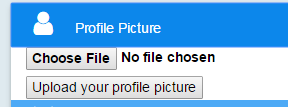
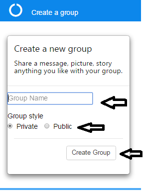
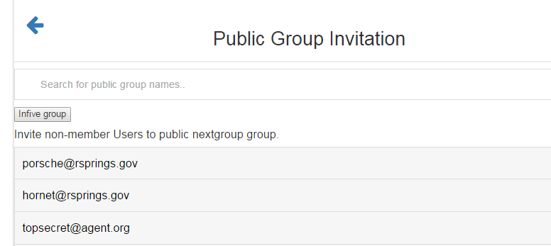
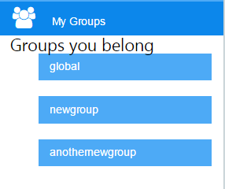
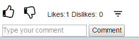

How do I view my profile?
Once you log in to Gatherly's main page on the upper left hand corner you should see a message like, "Welcome Tom!".
Click on, "Welcome Tom!" to view your profile page.
How do I change my profile picture?
Once you log in to Gatherly's main page on the left hand size navigation menu, you should see a navigaton bar called,"Profile Picture".
Click on the, "Profile Picture tab" to upload a new picture.
It can be any file with the extension .jpg, .jpeg, and .png. Please do not upload any other file type.

How can I create a new group
Once you log in to Gatherly's main page on the left hand size navigation menu, you should see a navigaton bar called,"Create a Group".
- Click on Create a Group
- Give a name to your Group, it can be anything like, "Team Mater" or "Team Sally"
- Select the style of the group, whether you want this group to be private or public
- Press, " Create Group "

How can I accept invitations to a group?
Once you log in to Gatherly's main page on the left hand size navigation menu, you should see a navigaton bar called,"My Invitations".
- Click on My Invitations
- Here you will see a list of invitations from your friends
- You can either accept or reject an invitation
- If you choose to ignore it or want to come back to it, you can come back and make a choice
How can I invite members to the groups that I created
Once you log in to Gatherly's main page on the left hand size navigation menu, you should see a navigaton bar called,"Owned Groups".
- Click on Owned Groups, this will take you to a new page
- In the search bar insert the email address of the person you wish to invite
- You will get a detailed list of email addresses of people who are not already a part of the group.
- Press,"Invite Group"

How can I see the groups I belong to?
Once you log in to Gatherly's main page on the left hand size navigation menu, you should see a navigaton bar called,"My Groups".
- Click on My Groups
- Here you will see a list of groups you are part of
- You can go in any of these groups and start sharing

How can I add reactions to a post?
On Gatherly's main page, you will see a bunch of posts. You can either like or dislike a post at the moment.
- Press the thumbs up button to like a post
- Press the thumbs down button to dislike a post
- Pressing either of the buttons multiple times will not affect the number of likes/dislikes a post receives

How can I comment on the posts
On Gatherly's main page, you will see a bunch of posts. Along with the thumbs up/down button you should see a small navigation bar.
- Click on the navigation bar - This is open up any/all comments on the posts
- In the text box which says,"Type your comment". Insert your response to the post
- You can post multiple times